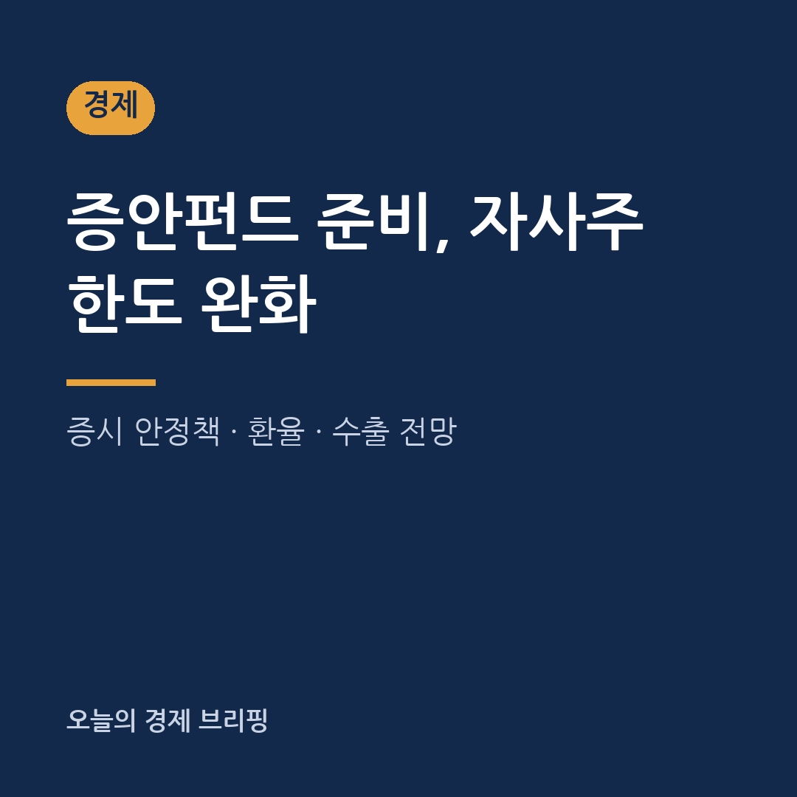
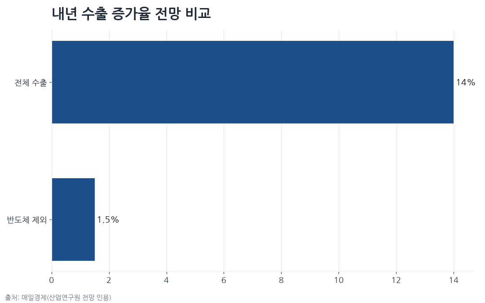

2026-11-23-1543-tistory 발행 키트 · 이 페이지는 검색에 노출되지 않습니다.
제목
카테고리
경제태그
본문 (그림·표 포함)
휴대폰 블로그 앱에서는 그림이 같이 붙지 않을 수 있어요. 그때는 [글자만 복사] 후 아래 이미지를 저장해 [그래프1]·[표1] 자리에 첨부하세요.

2026년 11월 23일 정부는 증시 변동성에 대응해 두 가지 수단을 공개했습니다. 하나는 상장사 자사주 1일 매수 주문 한도의 3개월 완화이고, 다른 하나는 증권시장안정펀드(증안펀드)의 가동 준비입니다. 다만 증안펀드는 규모와 투입 시점이 확정되지 않은 단계입니다.
같은 날 원/달러 환율은 15:30 기준가로 1,345.9원을 기록했고, 산업연구원은 내년 수출 전망을 내놨습니다. 아래에서 배경, 핵심 내용, 영향, 확인할 점 순서로 정리합니다.
▶ 배경: 반도체 중심의 변동성 확대
앞선 회차에서 다룬 것처럼 지난 20일 미국 증시에서 반도체 업종이 크게 하락했고, 이 여파가 국내 증시 변동성으로 이어졌습니다. 정부는 이 변동성을 관리 대상으로 보고 대응 수단을 점검하고 있습니다.
▶ 핵심 내용 1: 자사주 1일 매수 한도 완화
금융위원회는 상장사가 하루에 낼 수 있는 자사주 매수 주문의 한도를 3개월 동안 완화하기로 했습니다. 자사주 취득(회사가 자기 주식을 시장에서 사들이는 것)은 시장 수급을 보완하는 수단으로 쓰입니다.
중요한 점은 이 조치가 매입을 강제하지 않는다는 것입니다. 한도를 넓혀 매입 여력을 열어 준 것이며, 실제 매입 여부와 규모는 개별 기업이 결정합니다.
▶ 핵심 내용 2: 증안펀드와 비상계획
이형일 부총리 겸 재정경제부 장관은 출입기자단 간담회에서 증안펀드 외에도 이미 마련해 둔 비상계획(컨틴전시 플랜)이 있다고 밝혔습니다. 적절한 시기에 조치가 시행되도록 준비하겠다는 취지였습니다.
펀드 규모에 대해서는 실제 가동 상황을 보며 검토하겠다는 입장이었습니다. 따라서 현재 시점에서 투입 금액이나 시기를 단정할 수 있는 근거는 없습니다.
증시 안정 수단 비교
| 구분 | 주체 | 현재 상태 | 확인 방법 |
|---|---|---|---|
| 자사주 1일 매수 한도 완화 | 금융위원회 | 3개월간 완화 | 기업별 자사주 취득 공시 |
| 증권시장안정펀드 | 정부 | 가동 준비, 규모는 검토 중 | 정부 공식 발표 |
| 비상계획(컨틴전시 플랜) | 재정경제부 | 기 마련, 시기 미정 | 추가 조치 발표 |
출처: 연합뉴스, 세계일보
▶ 영향 1: 환율
원/달러 환율은 전 거래일보다 9.7원 오른 1,345.9원(15:30 기준가)이었습니다. 환율 상승은 달러 결제 비중이 큰 수입 기업과 해외 결제 소비자에게는 비용 부담으로, 달러 수입이 있는 수출 기업에는 유리한 요인으로 작용할 수 있습니다.
▶ 영향 2: 내년 수출과 반도체 의존도
산업연구원의 전망에 따르면 내년 우리나라 수출액은 1조 3,000억 달러 이상이 될 것으로 예상되며, 올해에 이어 두 해 연속으로 1조 달러 고지를 밟게 됩니다. 전체 증가율은 14%입니다.
반도체를 빼고 계산하면 증가율은 1.5%로 크게 낮아집니다. 인공지능(AI) 투자 확대로 반도체 비중이 수출 전체의 약 절반에 이른다는 점이 이 격차를 만든 요인입니다. 반도체 업황이 증시와 수출 양쪽에서 동시에 중요한 변수인 이유입니다.

▶ 확인할 점
첫째, 자사주 매입 공시가 실제로 늘어나는지 확인해야 합니다. 둘째, 증안펀드의 가동 여부와 규모가 공식 발표되는지 살펴봐야 합니다.
셋째, 환율은 일간 등락보다 추세를 보는 편이 적절합니다. 넷째, 수출 전망은 반도체 업황에 따라 크게 달라질 수 있음을 감안해야 합니다. 본 글은 정보 제공용이며 특정 종목의 매매를 권유하지 않습니다.
▶ 정리
1. 정부는 자사주 매수 한도를 3개월 완화했고, 증안펀드는 준비 단계입니다.
2. 원/달러 환율은 1,345.9원(15:30 기준가)으로 9.7원 올랐습니다.
3. 내년 수출 전망은 전체 14% 증가이나 반도체를 빼면 1.5%입니다.
출처 (본문 맨 아래에 붙여넣기 권장)
- 연합뉴스, 상장사 자사주 1일 취득 한도 3개월간 풀린다…증시 안정 차원, https://www.yna.co.kr/view/AKR20261123120600002 - 세계일보, 이형일 "증안펀드 외 컨틴전시플랜도 마련…규모는 상황 봐서", https://www.segye.com/newsView/20261123507286 - 연합뉴스, [외환] 원/달러 환율 9.7원 오른 1,345.9원(15:30 기준가), https://www.yna.co.kr/view/AKR20261123127400002 - 매일경제, 내년 수출 14% 늘어 1조3000억달러…반도체 빼면 1.5% 증가에 그쳐, https://www.mk.co.kr/news/economy/12216162